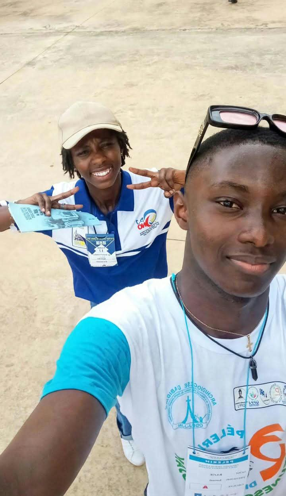
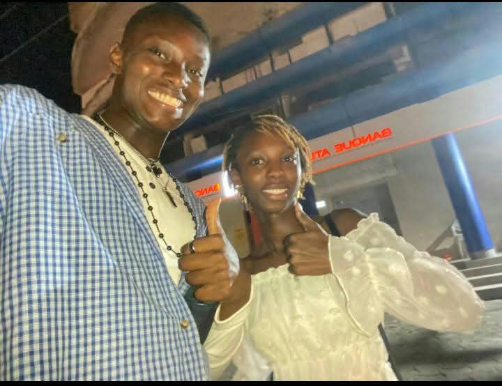
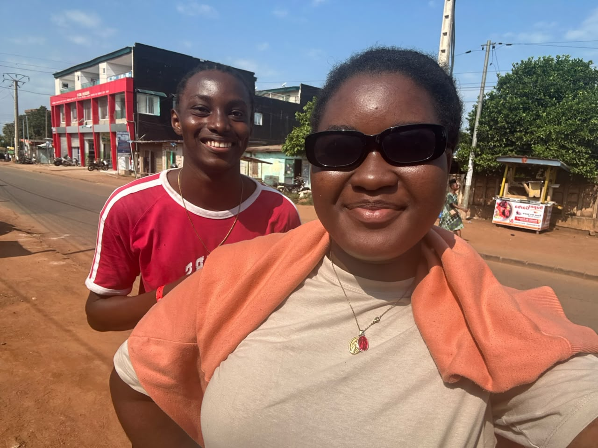
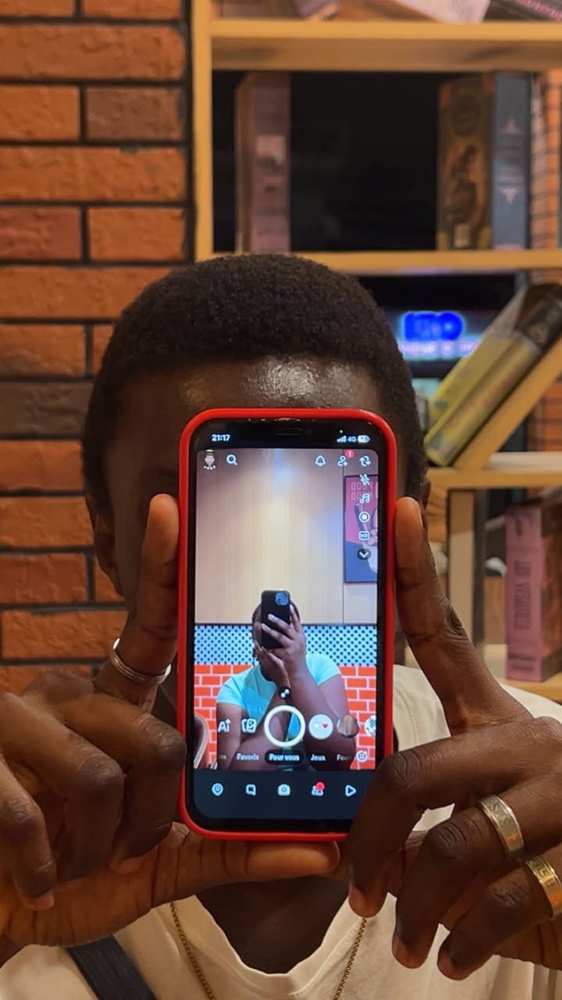
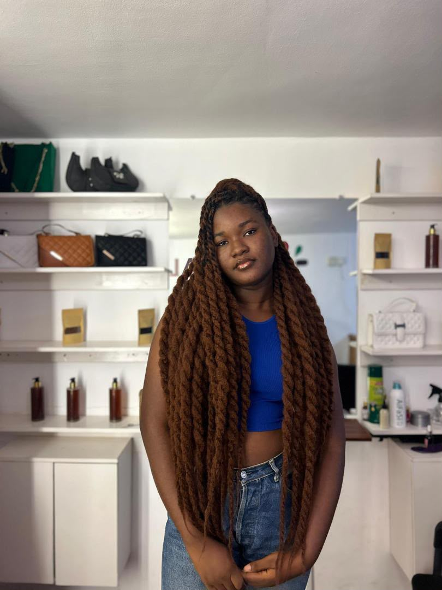
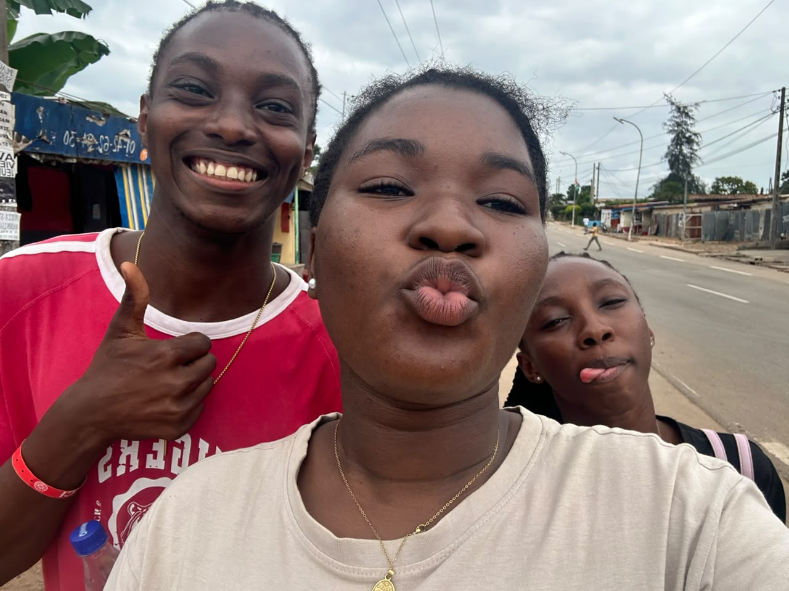
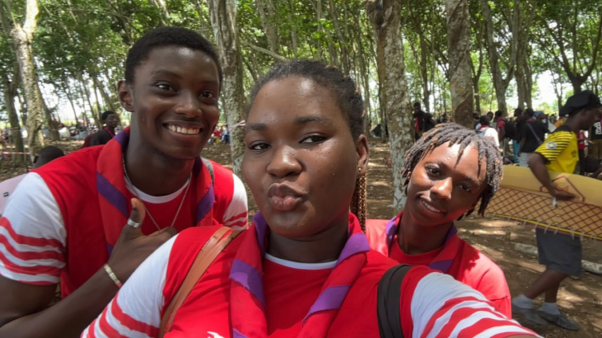
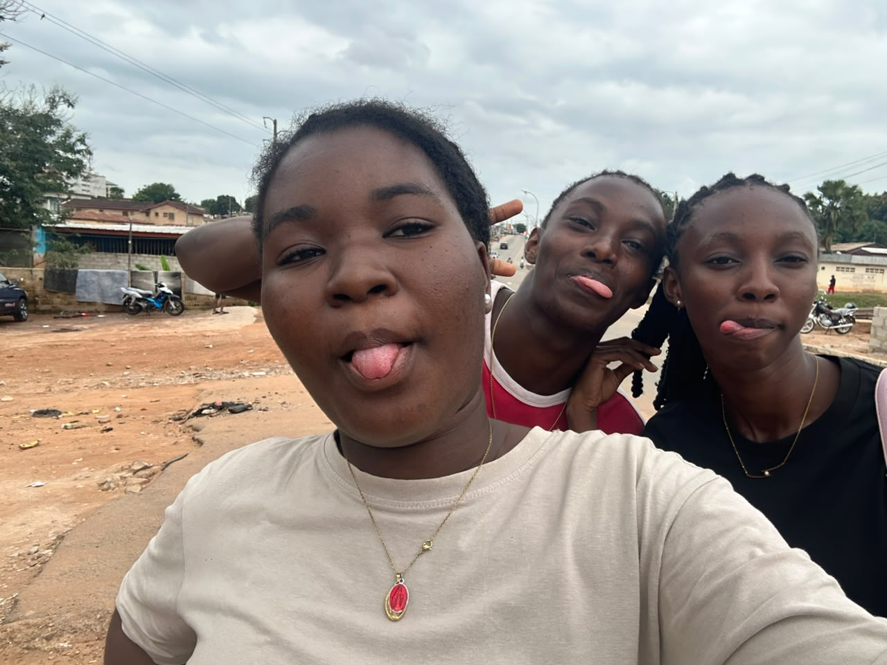

La paix, même dans les tempêtes.
Que tu trouves la force de traverser les jours compliqués sans oublier ta valeur.
À mon frère de cœur
Bientôt trois ans que la vie nous a mis sur la même route. Et quelque part, sans faire de bruit, tu es devenu bien plus qu'un ami.
J'AI QUELQUE CHOSE À TE DIRE ↓
Mon Ismaël d'amour, aujourd'hui c'est ton jour. Mais j'avais envie de profiter de cette date pour te rappeler une chose : ta présence dans ma vie compte énormément.
Bientôt trois ans qu'on se connaît. Trois ans, ce n'est peut-être pas toute une vie, mais c'est assez pour créer des souvenirs, des habitudes, des délires et surtout une place que tout le monde ne peut pas prendre.
Tu es de ces personnes qu'on ne choisit pas forcément comme un membre de sa famille, mais que le cœur finit par considérer comme tel. Un frère de cœur. Quelqu'un avec qui les moments simples ont de la valeur, et avec qui même les journées ordinaires peuvent devenir des souvenirs.
Je ne sais pas ce que les prochaines années nous réservent. La vie va avancer, nos chemins vont peut-être changer, chacun aura ses défis et ses victoires. Mais j'espère sincèrement qu'on gardera cette complicité(Un peu bizarre mais ça tient), ce respect et cette affection qui rendent notre amitié précieuse.
Pour cette nouvelle année, je te souhaite la santé, la paix dans la tête, la force quand les choses seront difficiles et le courage de poursuivre tout ce qui te tient à cœur(tes rêves,tes ambitions). Je te souhaite des occasions de sourire pour de vrai, des personnes sincères(Comme Marie-Paule et Moi) autour de toi et des réussites dont tu seras fier.
Et si un jour tu doutes de la place que tu as dans ma vie, relis ces mots : je suis heureuse de t'avoir rencontré, mon Ismaël d'amour. Merci d'être toi, Merci d'être mon psy.
Mais quelques images peuvent faire revenir mille choses : un endroit, un rire, une journée qu'on n'avait pas envie de voir finir.



En moins d’une année tu as occupé une place importante dans ma vie, ce que beaucoup n’ont pas pu faire, tu as su m’écouter quand ça n’allait pas, me conseiller sur certains sujets (même si je n’ai écouté aucun de tes conseils mdrr ) j’ai du mal à m’attacher et à faire confiance en amitié, surtout que je mets très haut les personnes que j’aime, mais en moins d’une année toi tu as su prendre la place de frère que j’ai toujours voulu avoir, tu cèdes à mes caprices, tu es attentionné, à l’écoute qu’est-ce que je peux demander de plus brefff en moins d’une année on a vécu des choses, partagé des rires, des pleurs (surtout je pense que si tu n’étais pas là en particulier toi et Emma à une certaine période je serais tombée en dépression amicale mdr) mais Dieu sait faire les choses, il y a tellement de choses à raconter que si je commence je ne sais pas si je pourrais m’arrêter mdr. Tout ça pour dire que JE T’AIME mon frère d’amour, merci de m’écouter et de céder à mes caprices même quand ça va pas chez toi, j’espère ne pas foutre cette amitié en l’air comme je sais le faire mdrr, j’espère de tout mon cœur qu’on restera comme les deux doigts de la main. Bisous
Mais quelques images peuvent faire revenir mille choses : un endroit, un rire, une journée qu'on n'avait pas envie de voir finir.



Que tu trouves la force de traverser les jours compliqués sans oublier ta valeur.
Que tes efforts ouvrent des portes, que tes projets avancent et que tu sois fier du chemin parcouru.
Des personnes qui célèbrent tes victoires, te respectent dans tes silences et restent sincères avec toi.
Parce que bientôt trois ans, c'est déjà précieux. Et j'espère qu'on aura encore beaucoup d'histoires à raconter.
03 — NOTRE HISTOIRE À TROIS
On dit souvent que dans un trio, il y a toujours un duo. Mais dans le nôtre, il y a trois duos, trois liens différents et une seule histoire qu'on écrit ensemble.

Nos délires, nos conversations et ces petits moments qui semblent ordinaires pour les autres, mais qui veulent dire beaucoup pour nous.

Y'a des gens avec qui t'as pas besoin de parler. Un regard et on se comprend. Le reste du monde peut attendre. C'est ça, notre petite complicité.

Notre trio a sa façon de se comprendre, ses blagues, son langage et ses souvenirs. Rien ne ressemble exactement à ce lien-là.
.jpeg)
Ce sont les petites attentions, les discussions inattendues et les moments partagés qui finissent par construire une vraie amitié.

Parce que même au sein du même trio, chacun construit des souvenirs différents avec l'autre. Et c'est justement ce qui nous rend uniques.

Il y a des choses qu'on ne peut pas expliquer à tout le monde. Certains souvenirs n'appartiennent qu'à nous, et ils resteront une partie de notre histoire.
Notre force, ce n'est pas d'être toujours pareils ou toujours ensemble. C'est que chacun apporte quelque chose que les autres n'ont pas. Et quand on est tous les trois, tout prend une autre dimension.
♥UN DERNIER MOT, MON GARS
Nous expérons que cette journée te rappellera à quel point tu es important. Continue d'avancer, de grandir et de devenir la personne que tu veux être. Nous te souhaitons le meilleur, aujourd'hui et pour toutes les années qui viennent.
Joyeux anniversaire, note bébé. ❤️
Que cette nouvelle année t'apporte plus de paix que de soucis, plus de victoires que de doutes, et assez de beaux moments pour te rappeler que la vie peut être magnifique. Et quoi qu'il arrive, je te souhaite de ne jamais oublier la personne formidable que tu peux devenir. ❤️